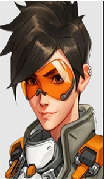
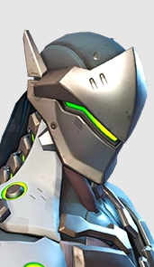
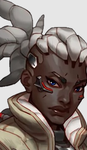
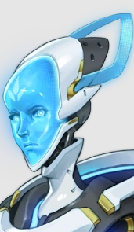

Tracer
The former Overwatch agent known as Tracer is a time-jumping adventurer and an irrepressible force for good.

Genji
The cyborg ninja Genji Shimada has made peace with the augmented body he once rejected, and in doing so, he has discovered a higher humanity.

Sourjoun
As a leader in the bygone days of Overwatch, Vivian Chase, callsign Sojourn, is determined to ensure its new heroes don’t repeat the mistakes of the past.

Echo
Echo is a multirole, adaptive robot with the most sophisticated artificial intelligence in the world, originally designed by Dr. Mina Liao for use during combat missions with Overwatch.
